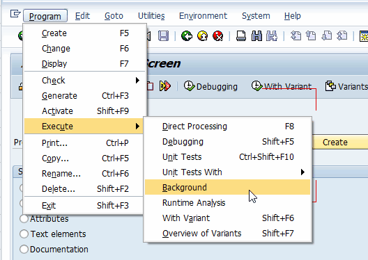
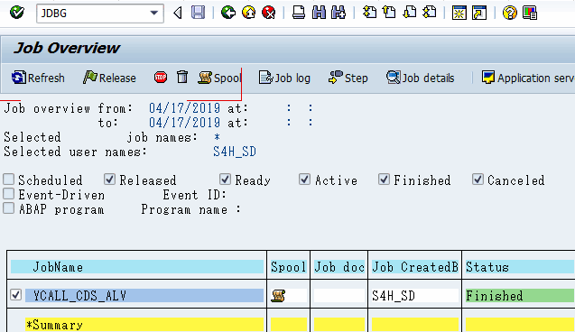
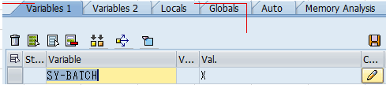
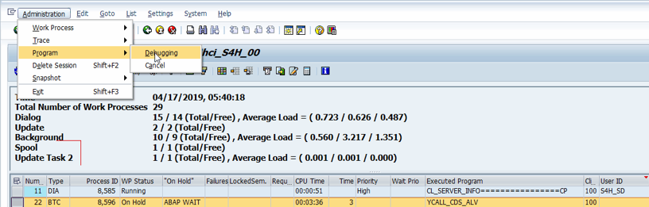

Hi today I would like to share how to debug programs that are running in background. Some might already know that programs can be debugged from SE38 by either entering "/h" or navigating from menu bars to execute as debugging mode. However, executing in background mode will not be able to do either of them. So here are two ways to debug programs in background session with ease.
Using JDBG
GO to SE38 and enter the program in question. From Program -> Execute -> background and choose your variant if needed and press "Run Now". This will schedule a background job.
Go to SE37 and you see the background job. Check it and enter "JDBG"(no need for /n) and enter(or simply go to Extras->Debug job). It will prompt a debug screen. It will not be where you think it will start but after several returns(F7), it will come to your code. Do not forget to check sy-batch for it is on! One thing to note is that this only possible for finished jobs.
Using SM50
Same as above. GO to SE38 and enter the program in question. From Program -> Execute -> background and choose your variant if needed and press "Run Now". This will schedule a background job. Then go to SM50 and find your work process by finding your program name. Select the row, Administration -> Program -> Debug and press Yes. It will prompt a debug screen. Again using returns(F7) several times to reach your programs. This doesn't have to wait for it to be done but need to hurry before the work process is released.
